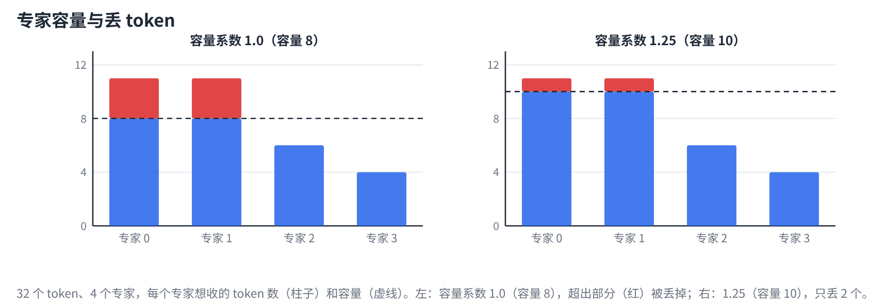
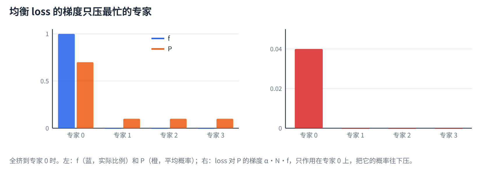
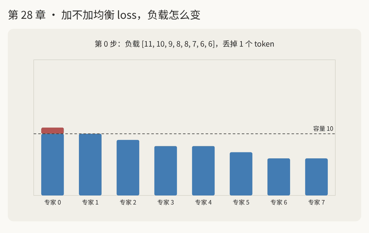

第 28 章 · 负载均衡：专家忙闲不均怎么办（Switch 的 top-1、容量系数、均衡 loss）
本地运行
git clone https://github.com/wikieden/beyond-transformer
cd beyond-transformer/code/notebooks
pip install jupyterlab torch numpy
jupyter lab ch28_load_balance.ipynb也可以下载后直接用 VS Code 打开 .ipynb 运行。需要 GPU 的章节在 Colab 里选「代码执行程序 → 更改运行时类型 → GPU」。
本章回答：router 一旦偏爱某几个专家，被偏爱的越训越好、越来越受欢迎，其他专家闲着白占显存，甚至干脆“死掉”。Switch Transformer 为什么敢只选 1 个专家？专家容量和容量系数是什么，超出容量的 token 去哪了？均衡 loss α·N·Σ f_i P_i 里，f 不可导、P 可导，它是怎么把负载推平的？
讲解日期：2026-11-26 · 上一章：第 27 章 MoE · 下一章：第 29 章 router z-loss 与 Mixtral
对应原文：Switch Transformertransformer-deep-dive/materials/text/papers/switch-transformer-2101.03961.txt§2.1 top-1 路由、§2.2 专家容量 式 (3) L319–L390（expert capacity = (token 数 / 专家数) × capacity factor；超出的 token 不经过这一层、只走残差；容量系数大于 1 留缓冲）、负载均衡 loss 式 (4)–(6) L400–L441（loss = α·N·Σ f_i·P_i；f_i 是分到专家 i 的 token 比例，不可导；P_i 是给专家 i 的平均概率，可导；均匀时取最小；α = 10⁻²）；GShardgshard-2006.16668.txt§2（top-2 和专家并行的通信）
本章缩写：Switch（Switch Transformer：每个 token 只“切换”到一个专家）；expert capacity（专家容量：一个专家一批最多收几个 token）；capacity factor（容量系数，CF）；token dropping（丢 token：超出容量的 token 不经过这个 MoE 层）；aux loss = auxiliary loss（辅助损失：加在主 loss 上的均衡项）；f_i、P_i = 专家 i 的实际 token 比例、平均路由概率；α = 均衡 loss 的系数；N = 专家数。全部缩写见 附录 · 缩写与术语表
讲解
第一步：为什么会不均衡（2026-11-26）
类比：一家新开的商场里有 8 家奶茶店。 开业第一天，碰巧多数人去了第 1 家；它生意好、练得熟、口碑更好，第二天去的人更多。几天后其他 7 家门可罗雀，店员（参数）白领工资。
router 也是这样：初始化时稍微偏爱某个专家，它被选得多、训练得多、输出更好，router 的梯度又把它的分数推得更高。结果：
- 浪费：少数专家处理大部分 token，其余专家的参数没被用上；
- 算得慢：多卡并行时专家分在不同的卡上，最忙的那张卡决定整体速度；
- “死专家”：从没被选中的专家永远得不到梯度。
一句话：router 有“富者愈富”的倾向，不加约束就会让少数专家包揽大部分 token，浪费参数、拖慢并行。
第二步：Switch：只选 1 个，再加专家容量（2026-11-26）
Switch（§2.1）大胆地让 k = 1：每个 token 只去一个专家。好处是计算和通信最少、实现最简单；坏处是负载更容易不均。
所以要给每个专家定一个容量（式 3，L378–L384）：
容量系数 1.0 就是“正好平均分”；大于 1 留出缓冲。专家收满后，后来的 token 不经过这一层的 FFN，只靠残差连接把原样的隐状态传到下一层（token dropping，L346–L350）。
数字演示（32 个 token、4 个专家；router 的偏好让 4 个专家大致按 40%、30%、20%、10% 被选）：
| 容量系数 | 每个专家最多 | 实际收到 | 丢掉的 token |
|---|---|---|---|
| 1.0 | 8 | [8, 8, 6, 4] | 6 |
| 1.25 | 10 | [10, 10, 6, 4] | 2 |
| 2.0 | 16 | [11, 11, 6, 4] | 0 |
容量系数越大丢得越少，但每个专家都要按最大容量预留计算和显存，空着的部分也是浪费。论文常用 1.0–1.25。

图 28-1 · 4 个专家收到的 token 数（柱子）和容量（虚线）。容量系数 1.0：前两个专家超出，红色部分被丢掉；1.25：只丢 2 个一句话：Switch 每个 token 只选一个专家；每个专家的容量 = 平均份额 × 容量系数，超出的 token 直接走残差跳过这一层。
第三步：均衡 loss：α·N·Σ f_i·P_i（2026-11-26）
光靠容量只是“截断”，还得让 router 自己学会分得均匀。Switch 的辅助 loss（式 4–6，L400–L441）：
| 符号 | 意思 | 可导吗 |
|---|---|---|
| f_i | 这批 token 里，top-1 选了专家 i 的比例 | 不可导（是计数） |
| P_i | 这批 token 给专家 i 的平均 router 概率 | 可导 |
| N | 专家数（乘上它让均匀时 loss 和 N 无关） | — |
| α | 系数，论文取 10⁻²（L438–L441） | — |
均匀时 f_i = P_i = 1/N，Σ f_i P_i = 1/N，loss = α。
数字演示（4 个专家、8 个 token、α = 0.01）：
| 情况 | f | P | loss |
|---|---|---|---|
| 均匀分配 | [0.25, 0.25, 0.25, 0.25] | [0.25, 0.25, 0.25, 0.25] | 0.0100（最小） |
| 全挤到专家 0 | [1, 0, 0, 0] | [0.7, 0.1, 0.1, 0.1] | 0.0280 |
它怎么起作用：f 不可导，所以 loss 对 P_i 的梯度就是 α·N·f_i。全挤到专家 0 时梯度是 [0.04, 0, 0, 0]：只把专家 0 的概率往下压，压的力度和它当前的负载 f_0 成正比。越忙的专家概率被压得越狠，于是 token 慢慢流向别的专家。
代价：这个 loss 的梯度会干扰主任务（它关心“分得均匀”，不关心“分得对”）；α 太大，模型为了均匀牺牲效果。第 30 章的 aux-loss-free 方法就是为了避开这个干扰。

图 28-2 · 左：全挤到专家 0 时的 f（蓝）和 P（橙）；右：loss 对 P 的梯度 α·N·f，只作用在最忙的专家上场景代码：Switch 式均衡 loss（PyTorch 写法；本书 chapter-code 只用 NumPy，这段没跑过）：
probs = router_logits.softmax(-1) # (T, N)
top1 = probs.argmax(-1)
f = F.one_hot(top1, N).float().mean(0) # 不可导：每个专家的 token 比例
P = probs.mean(0) # 可导：每个专家的平均概率
aux = alpha * N * (f * P).sum()
loss = lm_loss + aux
在自己的 MoE 上比较几种均衡方法、画专家负载直方图，是里程碑 T-M6。
一句话：Switch 的均衡 loss = α·N·Σ f_i·P_i，均匀时最小；对 P_i 的梯度是 α·N·f_i，越忙的专家概率被压得越狠。
动画演示：加不加均衡 loss，负载怎么变

可交互版：animations/28-load-balance.html（滑块：训练步数、容量系数；勾选框：均衡 loss）。
怎么看：
- 柱子是 8 个专家的负载，虚线是容量（第二步）；
- 不加均衡 loss：随步数推进，负载越来越集中到前几个专家，超出容量的部分（红）被丢掉；
- 勾上均衡 loss：负载慢慢被推平，丢的 token 越来越少（第三步）。
练习与作答记录
题 1（第二步）：64 个 token、8 个专家、容量系数 1.5，每个专家的容量是多少？
题 2（第三步）：2 个专家、4 个 token，top-1 分别选了 [0, 0, 0, 1]，平均概率 P = [0.6, 0.4]，α = 0.01，均衡 loss 是多少？对 P 的梯度是多少？
题 3（第三步）：把 α 从 10⁻² 调到 1（大 100 倍），负载会更均匀吗？语言模型的 loss 可能会怎样？为什么？
口诀
奶茶店富者愈富：偏一点就越偏越狠，浪费参数、拖慢并行、专家会死。
Switch 只选一个：容量是平均份额乘系数，满了后来的走残差跳过。
均衡 loss 阿尔法乘 N 乘 f 乘 P：f 不可导、P 可导；对 P 的梯度是阿尔法 N f，越忙压越狠；均匀时最小。
本章复习卡片
必背：B62（不均衡的成因与后果、专家容量与丢 token、Switch 均衡 loss 及其梯度）。练习做完后，按答错、卡住的地方再补。
附录 · 延伸阅读
留给以后深入学习用，不影响本章主线。★ 是建议先读的。
推荐阅读
| 读什么 | 读哪里 | 读它为了什么 |
|---|---|---|
| ★ Switch Transformers（Fedus 等 2022） | §2.1–§2.2 L319–L390；式 (4)–(6) L400–L441 | top-1、容量、均衡 loss |
| GShard（Lepikhin 等 2020） | §2 | top-2 路由和专家并行的通信 |
CS336 2025 Lecture 4 - MoEs.txt |
均衡一节 | 几种均衡方法的对比 |
| 《数学与实验统计》第 45 章 MoE | 均衡 loss 一节 | 为什么均匀时最小 |
数学原理
- 均匀时最小：约束 Σf = ΣP = 1 下，当 f ≈ P 时 Σf_iP_i ≈ ΣP_i²，由柯西-施瓦茨，ΣP_i² ≥ 1/N，均匀时取等号。
- 梯度只走 P：f 是 argmax 的计数，对参数梯度为 0；∂loss/∂P_i = α·N·f_i。
- 丢 token 不等于丢信息：被丢的 token 仍然通过残差连接到下一层，只是这一层的 FFN 没处理它。
公式清单
| 公式 | 意思 |
|---|---|
| capacity = (T/N) × CF | 专家容量（式 3） |
| \(\text{loss} = \alpha N\sum_i f_iP_i\) | 均衡 loss（式 4） |
| \(f_i = \frac1T\sum_x \mathbb 1[\arg\max p(x) = i]\) | 实际比例（式 5） |
| \(P_i = \frac1T\sum_x p_i(x)\) | 平均概率（式 6） |
代码对照：把本章的数字用代码算一遍
NumPy。代码在仓库本地
beyond-transformer/solutions/chapter-code/ch28_load_balance.py，配套测试tests/test_ch28.py，notebook 在notebooks/ch28_load_balance.ipynb：
bash cd beyond-transformer/solutions/chapter-code uv run python ch28_load_balance.py uv run pytest tests/test_ch28.py
讲义 ↔ 代码：
| 讲义 | 公式 | 写法 | 跑出来 |
|---|---|---|---|
| 第二步 容量 | (T/N)·CF | capacity、dropped |
CF 1.0 丢 6 个、1.25 丢 2 个 |
| 第三步 均衡 loss | α·N·Σf·P | switch_aux_loss(probs) |
0.0100 vs 0.0280 |
| 第三步 梯度 | α·N·f | grad_P(f) |
[0.04, 0, 0, 0] |
关键几行：
f = np.bincount(probs.argmax(1), minlength=N) / T # 实际比例（不可导）
P = probs.mean(0) # 平均概率（可导）
return alpha * N * (f * P).sum()
return int(math.floor(tokens / experts * cf)) # 专家容量
代码里才看得到的 2 件事：
- “先来先得”决定丢谁：
dropped按 token 顺序分配，所以序列后面的 token 更容易被丢。真实实现有的按 router 分数排优先级，有的随机。 - f 用的是 top-1：top-2 时有的实现把两个选择都算进 f，有的只算第一个；同一个公式，不同代码库的数会不一样。
自己改一改（不影响练习答案）：
- 把
skewed改成“专家 0 和 1 各一半”，loss 是多少？介于均匀和全挤之间吗？ - 把
dropped改成“按专家容量从后往前丢”，丢掉的个数变不变？